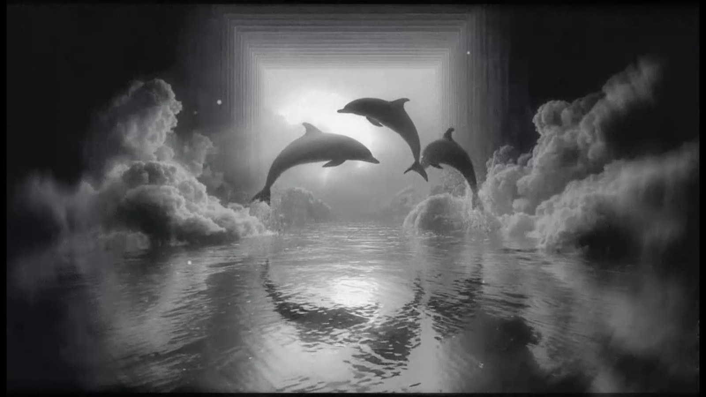

YAZHE GAO / FILM & INTERACTIVE ART / PORTFOLIO 2026
YazheGao
01 / INTROI work across film and interactive media, exploring creative intention, emotional expression and ways of seeing through narrative, experimental and generative moving images.
SCROLL TO UNFOLD THE ARCHIVE

02 / SILENT MIGRATIONSilent Migration · Visual developmentClick to explore
Portfolio Map
Seven projects across film, animation, title design and interactive experiences. Choose a direction to explore.
Selected Works
Each project is an experiment in seeing and feeling. Select an image to enter its creative world.
Technology becomes a moving-image language, not a visual gimmick.
I am Yazhe Gao, a final-year Digital Media Arts undergraduate at Xi’an Jiaotong-Liverpool University. My practice brings together film, interactive narrative, 3D environments and generative media, exploring how visual choices carry emotion and how creators express and revise their intentions.
AI FILMVISUAL STORYTELLINGART DIRECTIONMOTION DESIGNEDITINGVISUAL DEVELOPMENT